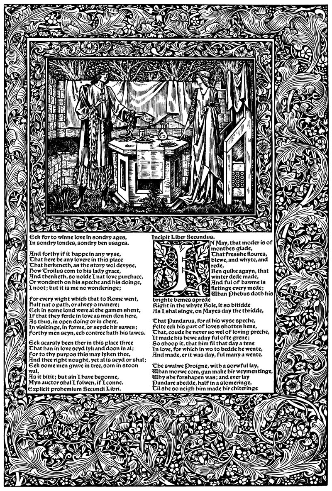

Type composition was about picking the right characters. Text formatting was about the visual appearance of those characters. Page layout is about the positioning and relationship of text and other elements on the page.
In fine printing, typographers usually get to choose the page size of their documents. But you don’t—most of the documents a writer prints will be on standard printer paper. And on the web, your reader essentially chooses the size.
That’s no reason to accept mediocrity. English artist and printer William Morris famously rebelled against mechanized, mass-produced typography—in the 1890s. He went on to produce a series of beautiful books intended as an antidote to the increasingly coarse ritual of industrial printing.
Today, the struggle continues. Word processors and web browsers beckon us with default settings and templates that promise great results with no effort.
But you only get out what you put in. Don’t accept the defaults. You can do better.
- centered text
- justified text
- first-line indents
- space between paragraphs
- line spacing
- line length
- page margins
- body text
- hyphenation
- block quotations
- bulleted and numbered lists
- tables
- rules & borders
- space above & below
- widow and orphan control
- keep lines together
- keep with next paragraph
- page break before
- columns
- line numbers
- paragraph & character styles
- maxims of page layout